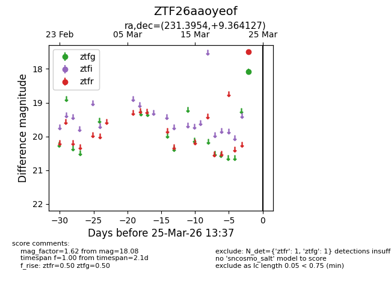
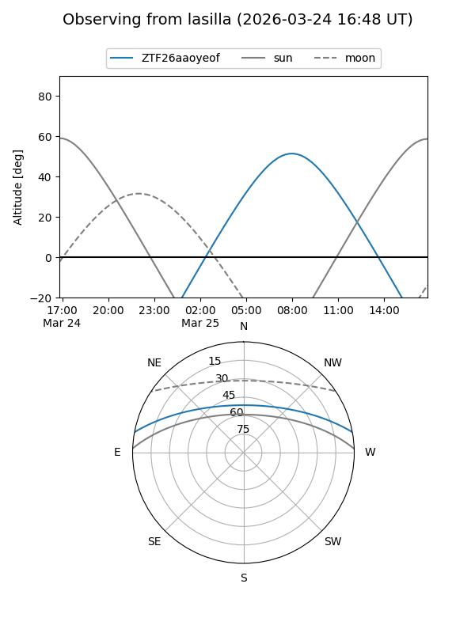
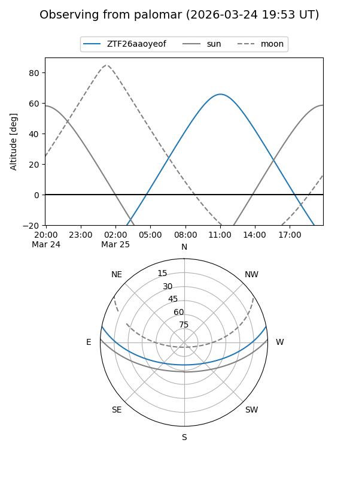

ZTF26aaoyeof
Target ZTF26aaoyeof at 2026-03-25 13:39
Aliases and brokers:
FINK: link
Lasair: link
ALeRCE: link
alt names
ZTF26aaoyeof (ztf,fink_ztf)
Coordinates:
equatorial (ra, dec) = 231.3954,+9.36413
equatorial (HMS+DMS) = 15:25:34.91,+09:21:50.86
galactic (l, b) = (14.3113,+49.55945)
Flags:
Photometry:
last ztfg=18.08, ztfr=17.50
1 ztfg, 1 ztfr detections
Lightcurve

Visibility


Additional plots